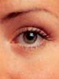

A
В прошлом месяце жюри присяжных штата Кентукки присудило рекордную сумму в 1,7 миллиона
долларов истцу, перенесшему неудачную лазерную операцию на глазу, и
адвокаты истцов теперь говорят, что популярный, но иногда
опасные процедуры "LASIK" могут стать серьезным массовым правонарушением. Ариэль Бершадски, адвокат из Нью-Йорка, который провел обширное
исследование по этому вопросу, сказал Lawyers USA, что "решения такого рода
безусловно, привлекут внимание медицинских кругов к случаям применения LASIK.
адвокатов по делам о халатности и [заставить их] осознать, что многие из этих дел
заслуживают внимания и должны быть рассмотрены".
Беркщадски, сам являющийся истцом по делу LASIK, предположил, что "многие
дела не возбуждаются из-за того, что пациентам трудно найти
адвоката, который достаточно хорошо разбирается в хирургии, чтобы быть готовым
взяться за это дело".
Более миллиона лазерных офтальмологических операций проводятся каждый год,
и все большее количество истцов подали иск, утверждая, что
некоторые недобросовестные врачи, выполняющие операцию
без надлежащей проверки.
Операция LASIK, которая может быть выполнена за считанные минуты в
амбулаторных условиях, является чрезвычайно прибыльной, и
в последние годы конкуренция за пациентов резко возросла.
Дело о лазерной операции на глазах в Кентукки стоимостью 1,7 миллиона долларов стало первой лазерной операцией на глазах в Луисвилле
адвокат Томас Херрен, который сказал, что был
удивлен тем вниманием, которое было привлечено к вердикту.
В дополнение к запросам СМИ Херрен сообщил Lawyers USA, что он
получил несколько звонков от потенциальных истцов.
Вердикт, вынесенный в Кентукки, стал второй
премией в области лазерной хирургии глаза стоимостью более миллиона долларов за последние два года. В 2000 году истец из
Буффало, штат Нью-Йорк, получил 1,2 миллиона долларов после того, как его глаз был разрезан
лазером.
Также в прошлом году врач из Дарема, Северная Каролина, согласился заплатить 1 доллар
миллион долларов, чтобы урегулировать иск, поданный мужчиной, который утверждал, что был
вынужден сделать пересадку роговицы после неудачной операции
с помощью недорогого лазера.
Медицинская Ошибка Или Неисправный Аппарат?
Клиентка Херрена, истица Тоня Оливер, обратилась за лазерной
хирургией глаза для коррекции своего астигматизма в 1998 году.
Предварительная операция, проведенная ответчиком, доктором Томасом
Эйбеллом, прошла успешно. Но врач, по словам истицы,
посоветовал ей вернуться для незначительной коррекции левого глаза. -
в отрасли эта операция известна как "улучшение зрения".
Истец прошел корректирующую процедуру пять месяцев спустя.
Но, когда повязки были сняты, состояние глаза истца
ухудшилось.
Через неделю ей было назначено еще одно улучшение
зрения, а через месяц - четвертая операция, когда зрение по-прежнему ухудшалось
улучшить. После этой четвертой и последней процедуры LASIK
истец начал посещать другого врача.
По совету специалистов истцу в конечном
итоге была проведена трансплантация роговицы, которая привела к ряду осложнений, сказал
Херрен. Хотя технически трансплантация прошла успешно, эта
радикальная мера не смогла существенно улучшить зрение
истца.
Истец подал в суд Абель, врача, который проводил тысяч
операций. В жалобе истец утверждал, что
во время первоначального усовершенствования врач ввел неверные данные
в аппарат LASIK, в результате чего лазер воздействовал не на ту
часть глаза истца, что скорее усугубило проблему
, чем улучшило ее.
Ответчик, в свою очередь, утверждал, что истец получил травму
потому что лазер был неисправен. Он также утверждал, что
истец знал о рисках, связанных с операцией.
Осознанное согласие
По данным Berschadsky и Herren, информированное согласие часто лежит
в центре ЛАСИК мед-мал костюм.
В этом случае пациенты ответчика должны были подписать
14-страничную форму согласия с признанием рисков и посмотреть видео, в котором
подробно описывались все возможные осложнения.
"Проблема заключалась в том, что даже собственные эксперты [защиты] признали, что
вы не соглашаетесь с ошибкой при подключении [компьютера]", - сказал
Херрен.
Бершадский согласился с этим, отметив, что, хотя пациенты могут согласиться с
неизбежными рисками, они не отказываются от своего права подавать в суд за
медицинские ошибки - ни при проведении самой операции, ни при оценке
подходящих кандидатов.
"Все судебные иски, которые я видел, были вызваны плохим
отбором", - сказал он.
Херрен сказал, что его дело основывается на трех важнейших доказательствах:
предоперационные записи врача; тот факт, что он назначил повторное лечение через неделю после первого; и показания бывшего врача.
сотрудник, который утверждал, что врач признал свою ошибку.
Защита не оспаривала тот факт, что
в предоперационных записях врача содержались расчеты, которые, если бы они были использованы во
время операции, повредили бы глаз истца. Однако
в официальном плане операции эти расчеты отсутствовали. Врач
утверждали, что он понял свою ошибку перед операцией и вступил
корректные данные в машину.
"Но проблема заключалась в том, что результат был именно таким, как вы ожидали
ожидайте, если бы он оперировал не на той оси", - сказал Херрен, отметив
, что также необычно, что план операции был неполным.
Вторым важным доказательством стало быстрое планирование
второй процедуры улучшения.
По словам Херрена, после первого улучшения истец не мог видеть большую
букву "Е" на глазном яблоке.
"[Врач] назначил ей процедуру через неделю", - говорит Херрен.
сказал. "Позже мы узнали, что проведение процедуры всего через неделю
- это неслыханно. Требуется некоторое время, чтобы глаз привык".
Бершадский согласился с тем, что планирование еще одной операции так близко к
первой было крайне нерегулярным, и предположил, что это создало
впечатление, что обвиняемый, возможно
, пытался замести следы.
Третьим важным доказательством для истца стали
показания бывшего сотрудника врача. Уволенная сотрудница
показала, что случайно услышала, как врач сказал
истцу после операции, что "рецепт не соответствует действительности".
это означало, что он ввел в лазер неверные данные.
Херрен сказал, что в то время ни истица, ни ее муж не обратили внимания на этот комментарий
, но офисный работник, который устроился
на другую работу в течение дня после того, как покинул офис ответчика, был
чрезвычайно убедителен и нанес ущерб защите доктора.
Дело доктора
Адвокат защиты в Луисвилле, штат Кентукки, Джеймс Громанн, который взялся за
дело после оглашения приговора, сказал Lawyers USA, что
показания бывшего сотрудника не имеют смысла.
"Я думаю, что офисный работник был недовольным бывшим сотрудником,
но она показала, что случайно услышала, как врач сказал, что он оперировал не по
той оси", - сказал Громанн. "Итак, если вы верите этому свидетелю,
вы должны верить, что он был откровенен с [истицей], а если
вы ей не верите, то где доказательства [того, что он скрывал
что-то]?"
Громанн сказал, что, хотя истица все это
время утверждала, что причиной потери зрения была ее роговица, пересадка
роговицы не смогла исправить проблему, хотя хирург засвидетельствовал, что
она прошла успешно.
- Если проблема действительно была в роговице, то почему пересадка не
улучшила ее зрение? он спросил.
Защита предположила, что истица преувеличила
степень своей травмы - обычная защита в делах, связанных с процедурой LASIK, когда
единственным доказательством нарушения зрения часто являются собственные
показания истицы, поскольку человек может видеть ореолы вокруг глаз и испытывать сильное ослепление
, но при этом проходить тестирование со зрением 20/20.
В данном случае, по словам Громанна, свидетели-эксперты засвидетельствовали, что
зрение истца должно было улучшиться.
"Она представила субъективные доказательства того, что ее зрение было серьезно
повреждено, и никто не может проникнуть в ее сознание и оспорить это", -
сказал он. "Все объективные доказательства говорят о том, что она должна видеть, но она
говорит, что не может".
Текущее состояние
Вердикт в размере 1,7 миллиона долларов включал в себя 400 000 долларов за будущую боль,
страдания и душевные терзания, 300 000 долларов за прошлую боль и страдания,
50 000 долларов за будущие медицинские расходы, 10 000 долларов за прошлые медицинские
расходы: 48 000 долларов в связи с потерей заработной платы и 472 000 долларов в связи с постоянным
снижением трудоспособности.
Присужденная сумма также включала штрафные убытки в размере 500 000 долларов. В своем
ходатайстве о новом судебном разбирательстве Громанн оспорил это решение.
По словам Громанна, не было никаких доказательств, на которых основывались
бы штрафные санкции, поскольку не было доказательств умышленной халатности
и поскольку присяжным не были даны инструкции о том, как определить
сумму ущерба.
Но Херрен сказал, что присяжным было разрешено вынести решение о наказании, поскольку
эксперты обеих сторон согласились с тем, что, если бы в расчетах была допущена ошибка
, обвиняемый был бы этически и
юридически обязан сообщить своему пациенту об этой ошибке.
"Когда обе стороны заявили это, присяжные пришли к выводу, что он скрыл
что happened...it на самом деле стало выглядеть так, будто он что-то скрывал".
Однако Громан оспорил эту оценку.
"По сути, в каждом случае есть опровержение ошибки", - сказал он. "По
логика [истца] такова, что в каждом случае, когда вы отрицаете ошибку,
это всегда влечет за собой штрафные убытки".
В рассматриваемом ходатайстве также отмечается, что муж судьи является
сотрудником той же фирмы, что и адвокаты истца Херрен и
Чарльз Адамс.
Но Херрен преуменьшил значение ассоциации юридических фирм, заявив, что
защита знала об их отношениях задолго до суда и
косвенно отказалась от каких-либо возражений.
Однако Громанн утверждает, что, согласно соответствующим
судебным канонам, судья должна была взять самоотвод.
"Судье не следовало рассматривать это дело. Она замужем за
юристом, работающим в офисе юридической фирмы истца", - сказал Громанн.
"[Муж судьи] является одним из трех юристов в фирме".
Громанн сказал, что он не знает, почему защита не
подняла вопрос о конфликте интересов ранее, но настаивал на том, что он
не был снят.
"Единственным способом отказаться от этого было бы для обеих сторон
подписать соглашение, в котором говорилось бы, что они отказались от этого вопроса", -
сказал Громанн, отметив, что его клиент все еще рассматривает возможность подачи апелляции
если в новом судебном разбирательстве будет отказано.